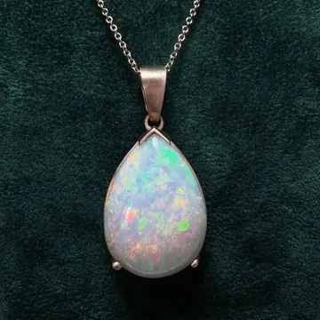

Dall’idea al disegno
Ci racconti cosa desideri: una storia, una foto, anche solo un’emozione. Ne ricaviamo insieme un bozzetto e scegliamo metallo e pietre.
Laboratorio orafo · Piazza Duomo 47, Voghera
Da trent’anni Anna e Giorgia trasformano idee in gioielli nel laboratorio orafo di Piazza Duomo. Un pendente con una dedica, orecchini per un’occasione, un anello da un gioiello di famiglia: ogni pezzo nasce da una conversazione.

Ci racconti cosa desideri: una storia, una foto, anche solo un’emozione. Ne ricaviamo insieme un bozzetto e scegliamo metallo e pietre.
Dal disegno nasce il modello in scala reale, per verificare proporzioni e vestibilità. Poi la fusione in oro e il lavoro al banco: incastonatura, lucidatura, incisione.
Il gioiello è pronto quando è perfetto, e te lo consegniamo di persona in laboratorio.
Domande frequenti
Dipende da metallo, pietre e lavorazione: al primo incontro definiamo insieme idea, tempi e costi, senza impegno.
Sì, possiamo valutare il riutilizzo di oro e pietre dei tuoi gioielli in un pezzo nuovo.
Siamo in Piazza Duomo 47 a Voghera, dal martedì al sabato. Chiamaci per fissare un appuntamento: ti dedichiamo tutto il tempo che serve.